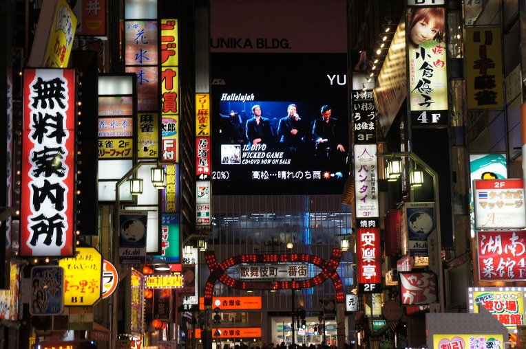

오다이바 가는법
- 야마노테선 신바시역 시오도매 출구로 이동
- 유리카모메(무인열차) 이용권 구매
- 오다이바역 하차
덱스 도쿄 비치
- 다이바 잇초메 상점가 : 복고풍 상점가
- 조이플러스 : 실내 테마파크, 대형 오락 시설
다이바시티
- 실제 사이즈 건담
- 오다이바 대규모 쇼핑몰
오오에도온천
- 노천탕, 닥터피쉬, 스파 등 온천체험
- 일본 전통 옷 유카타 무료 체험
- 에도시대의 분위기로 다양한 먹거리와 놀거리 제공
오다이바 해변
- 자유의 여신상
- 레인보우 브릿지
- 온천 이용 후 야경 보기

신주쿠
- 도쿄 최대 번화가
- 가부키초 : 술집, 유흥 장소
- 길거리 구경, 하루 마무리
다이칸야마 -> 오모테산도 -> 하라주쿠 -> 시부야
다이칸야마
- 한국의 청담동과 비슷한곳
- 분위기 좋은 카페가 많고 동네가 한적
다이칸야마 가는법
- 시부야역에서 도큐도요코선타고 한정거장
맛집 정보
- bluestar donuts (알콜 도넛)
오모테산도
- 도쿄 최대의 스트릿 패션 브랜드 거리
- 한국 가격보다 저렴하게 구할 수 있다
- Supreme , Bape , COMME des GARCONS
- Omotesnado Hills : 복합 쇼핑몰
하라주쿠
- 한국의 홍대거리와 비슷하다
- 수 많은 맛집과 길거리 쇼핑하기 최적의 장소
- 캣스트리트 : 오모테산도와 마찬가지로 스트릿 패션 거리
- 다케시타도리 : 하라주쿠 중심지 ( 젊음의 거리 )
맛집 정보
- 파블로 : 치즈타르트
- 엔젤스 하트 : 크레페
- 장가라라멘 : 배틀트립에 나온 라멘 맛집
시부야
- 신주쿠와 마찬가지로 도쿄 최대 중심가
- 스크램블 교차로
- 주로 젊은 층들이 많고 이자카야와 클럽도 많다
- 돈키호테 : 일본 제품을 싸게 구할 수 있는곳
맛집 정보
- 사와노이 : 우동 ( open AM 11 )
- 모토무라 규카츠 : 규카츠 정식
- 가스토 : 패밀리 레스토랑
아사쿠사 -> 아키하바라 -> 마리오카트 -> 긴자
아사쿠사 신사
- 현대화된 도쿄 시내에서 전통적인 색을 느낄 수 있는곳
- 센소지를 중심으로 전통 신사, 절, 불상들이 보관되어 있다
- 옛 거리 : 에도 시대부터 이어진 상점가
아사쿠사 가는법
- 시부야역에서 긴자선 아사쿠사역 하차 후 도보 이동
맛집 정보
- 우나테츠 : 장어 덮밥
아키하바라
- 일본 최대의 전자 상가 & 피규어 매장
- 애니메이션을 좋아하는 사람들의 성지라 불림
- 메이드카페 : 일본에만 존재하는 특별한 경험을 할 수 있다
아키하바라 가는법
- 아사쿠사(긴자선) -> 우에노(히비야선) -> 아키하바라
마리오카트
- 도쿄 시내 도로를 카트로 주행할 수 있다
- 1시간, 2시간, 3시간 코스 중 선택
- 분장 및 복장 대여 가능
- 국제 운전 면허증 필요
- 아키하바라에 위치하고 있다
- 사전 예약 필수
긴자
- 한국의 강남과 비슷
- 명품 매장 및 백화점이 매우 많다
긴자 가는법
- 아키하바라(히비야선) -> 긴자역
맛집정보
- 긴자 주변에 이자카야 거리가 많다
- 도쿄 직장인들의 느낌을 즐길 수 있다
시부야 -> 츠키지시장 -> 나리타공항
츠키지시장
- 도쿄 최대의 수산시장
- 츠키지시장 골목골목은 먹거리로 가득하다
- 보통 오후 2시면 대부분 문을 닫는다
츠키지시장 가는법
- 시부야(긴자선) -> 긴자역 하차후 도보 이동
맛집정보
- 우니동 : 성게 덮밥 (비싸지만 마지막 사치)